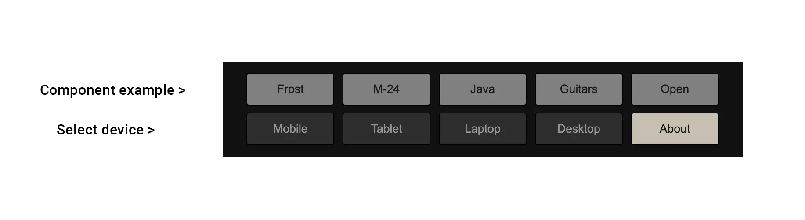

About
This is a responsive web component library built using the Web Components API. The purpose is to utilize and compare native web technologies with popular frameworks like React, Angular, and Vue.

Web Components
The examples demonstrats how web components can be used on different devices (mobile, tablet, laptop and desktop). The library may be adapted with custom colors, features, images, fonts, and more.
Github | MozillaToolbars

Image grids

Image and double text

Side-by-side reversable

Reusable sections

Fully responsive design

Call-to-action

Footers